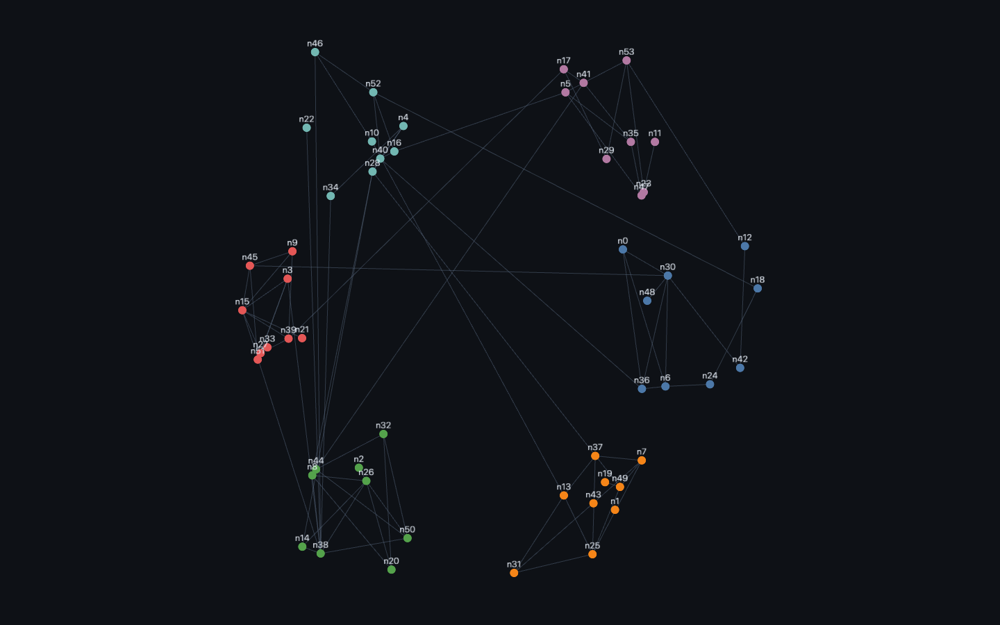
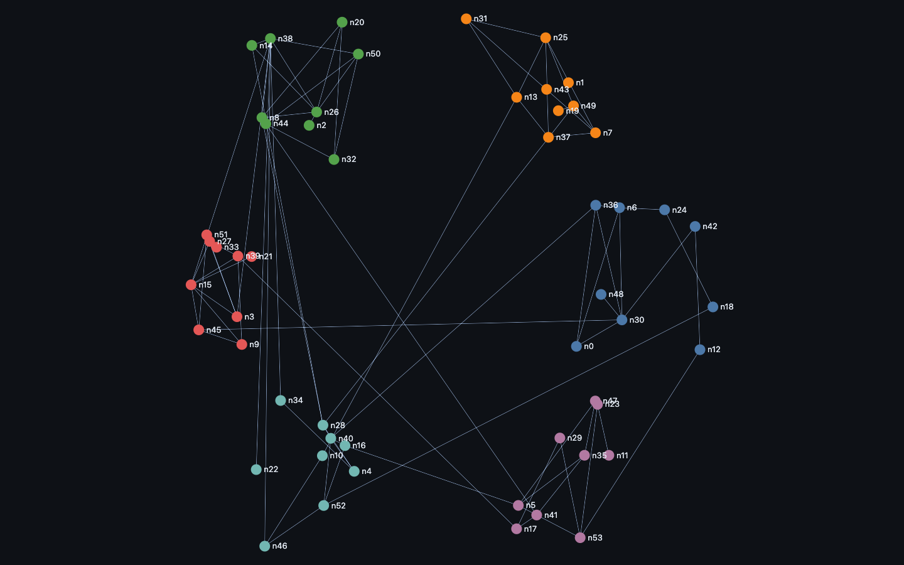
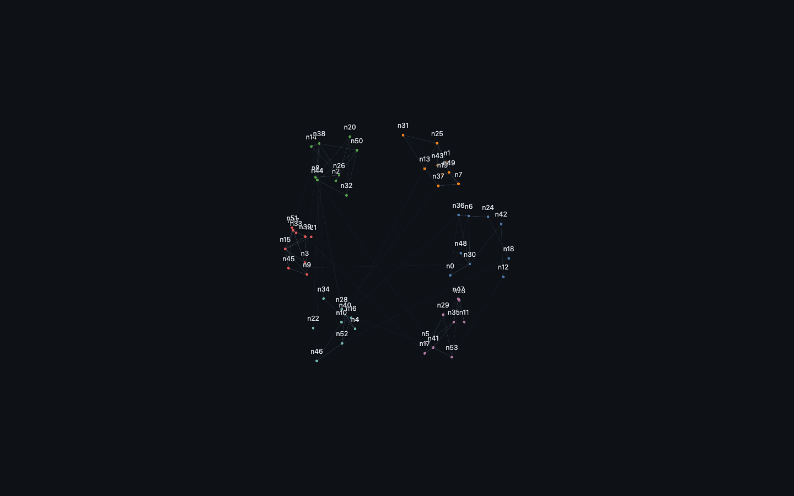
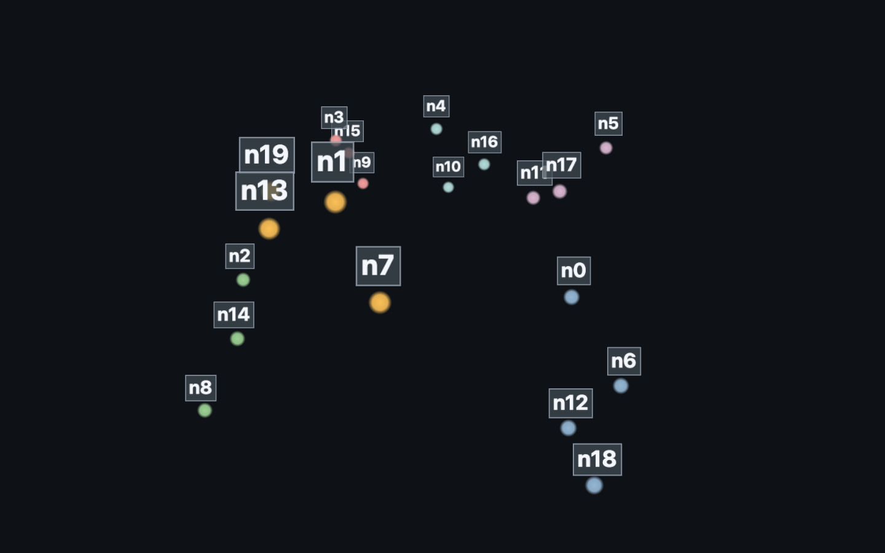
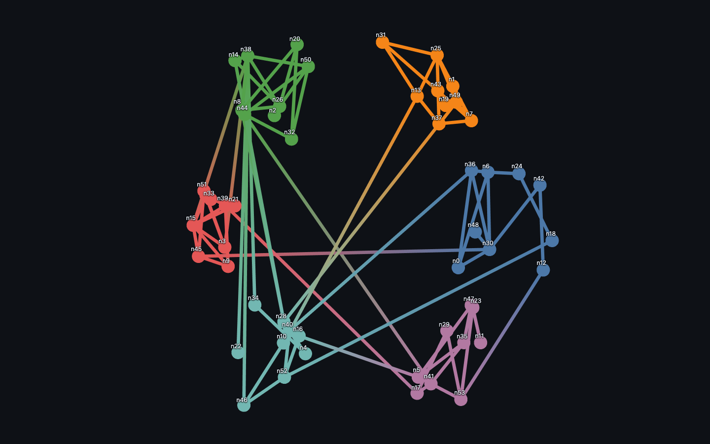

Text on nodes / points, usually with a level-of-detail threshold so labels don’t overwhelm the overview.

Rendered on the real GPU and gate-verified — it draws, and the pixels change when the camera moves (not a frozen frame). Held 120 fps at 54 nodes / 86 edges.

Rendered on the real GPU and gate-verified — it draws, and the pixels change when the camera moves (not a frozen frame). Held 120 fps at 54 nodes / 86 edges.

Rendered on the real GPU and gate-verified — it draws, and the pixels change when the camera moves (not a frozen frame). Held 120 fps at 54 nodes / 86 edges.

Rendered on the real GPU and gate-verified — it draws, and the pixels change when the camera moves (not a frozen frame). Held 120 fps at 20 points.

Rendered on the real GPU and gate-verified — it draws, and the pixels change when the camera moves (not a frozen frame). Held 120 fps at 54 nodes / 86 edges.
| Library | Support | Notes |
|---|---|---|
| deck.gl | ✓ native · verified | TextLayer — per-node SDF text above each node. |
| Sigma.js | ✓ native · verified | Built-in node labels; the LOD threshold is lowered so every node labels. |
| cosmos.gl | ◑ workaround · verified | No native text — labels are an HTML overlay via trackPointPositionsByIndices + spaceToScreenPosition (the pattern the Cosmograph wrapper packages as its labels feature). |
| three.js | ◑ workaround · verified | Text via THREE.Sprite (CanvasTexture); CSS2DRenderer is the other add-on. |
| Helios-Web | ✓ native · verified | Native label tracking — trackAttribute runs a GPU pass that selects nodes to label and returns each one’s on-screen centroid; the onTrack callback places the label DOM. |